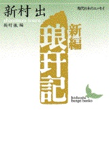

書評コーナー
季刊誌53号より
新編 琅玕記
■新村出 (著)／講談社文芸文庫
■ISBN-10: 4061962884
■ISBN-13: 9784061962880
■Ａ６判 337ページ 価格952 円（税別）
国民的辞書『広辞苑』の編者である新村出博士の、語源語史を巡るエッセー集。ちなみに、その広辞苑によると、語源とは 「個々の単語の成立・起源。単語の原義」だそうで、鍋という言葉の起源は肴（な）瓶（へ）、つまり「肴を入れる瓶」にある、 という例示がある。
そういう辞書を編んだ人の、語源・語史を巡るエッセー集であるから、記述はまことに微に入り細にわたるーー 広辞苑では「微に入り細をうがつ」とあった。「日本一」という言葉がいつごろから使われ出したのかという考証から、 京都の先斗町の地名の起源、英語のLOVEに対する「御大切」「思い」といった歴史的訳語の考証、「とても」という副詞が、 本来は否定的用法に限定されていたのではないかという仮説まで、執拗なほどの追求と文献的検証が繰り広げられている。
そうかと思うと、京都帝国大学文学部の国語学の大家たちが、大学の食堂で「すき焼き」の語源について 議論を戦わせる様子が描かれたり、巳年の年頭の蛇についてのエッセーを「巳駄話」と題するなど、駄洒落も随所に登場したりして、 にやりとさせられるところもある。書名の「琅玕」は「ろうかん」と読み、翡翠など中国で珍重された緑色の宝石のことだそうだ。（や）